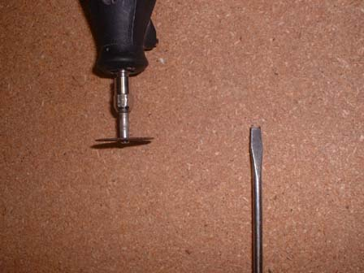

Reprogrammable EPROM Cartridge
Here's a reprogrammable EPROM cartridge that I built from plans by David Tucker - His instructions. It works just like a regular cartridge except you decide what goes on it. I have tried many different games on it, they all seem to work, including my homemade Simon game.
Parts List:
Perfboard and two 32pin (or more - I got 40 pin because they're easier to find) sockets, and jumpers (optional)

Original VB cart, I used Teleroboxer because it is cheap and has battery backed save games
Eprom programmer, I used an EPROMER5 from www.ustr.net . But the cable is junk, so buy a real one (wouldn't write anything correctly for me)
32 pin EPROMs (27C801's) and ZIF sockets (optional, but easier than prying out chips)
An EPROM UV eraser (mine is a Datarase II) or you can leave the chips in the sun for a long time or make your own
And you will also need: A spool of wrapping wire, a soldering iron, and solder - all available at Radio Shack
Building Instructions:

First, to open up a cartridge you need a tool, either you can buy one that fits the cart, or what I did was take an old flat head screwdriver that was about the width of the hole, then notched out the center wide enough to grab the center of the screw.
Then you need to open up the cart (which cart you use is up to you, but I picked Teleroboxer because it has battery backed save games and is fairly cheap)

After opening, you need to remove the chip which I did by clamping down the board, taking a chisel to get under the edge of a corner, then use a soldering iron and to melt the solder and pry up with the chisel (the chisel works the best because even a small flat head screwdriver had a hard time getting under the corner of the chip)

Then you should test to make sure there are no shorts where you desoldered the chip, and if you have to, use a pick to scratch away some excess solder
Then you are going to need some perfboard and IC sockets (at least 32 pin, but I used 40 pin because they're easier to find), then cut it to the approximate shape that you want it. You can put the chips just about any way you can think of, but I put them side by side so it doesn't stick out much in the back, but you can make it as the VB Cart, but about twice as long. I will get to the jumpers in the middle later. Remember, we have not soldered anything yet, those are just sitting in the holes.
Then you're going to want to test the fit, make any notches/holes to fit better, and try actually sticking it into the VB (do it now, because it will be harder to modify later)

To cut the wires, the fastest way I've found is to decide how long you want the wires, then make a tool to make the wires that length. What I did was found a block of wood the size I wanted, drilled a hole down the middle of it, stuck a screw through it. Then attach it to a drill and it'll quickly make a new spool the length that you want, then just take a knife and cut straight across and all the wires are relatively the same size.
You need to then read this file to find out which wires go where
Next, you want to put the socket in the holes, and slide the wires that are duplicate with the other side in each hole (saves running two wires to the cart edge which is very crowded), then run them to the other side and put them in the same holes. Then you will want to solder them in (you may want to solder the extra pins in first if you got a 40 pin socket so it stays in place when you move it around)
This is after soldering in the duplicate wires to the front
Then you will need to solder the wires to the back of the board. The jumpers are so you can use a flash EPROM chip instead of standard UV erasable EPROM.
Next, you need to solder the wires from the EPROM board to the VB Cart board. The best way I found to do this was to clamp the EPROM board, and clamp a 2x4 to the bench and use it to support the VB Cart board while you solder all the wires (be careful, they are very small and brittle)
Then after you get the wiers connected, carefully put the the two boards into the cart case
Then you're ready to put the ZIF sockets in, program the chips, put them in, and PLAY GAMES!
Here it is from the top, as you can see, it doesn't stick out too far in the back, and doesn't cause as much bend in the cart
Programming:
To program, you must first make sure the chips are blank (mine take about 15mins in the eraser), then select the chip type and rom you want to program. Because we have to use two chips, you must program the High and Low Bytes separately. You can do it in this program, but there are many bugs in it that it is better to split the file first, then program the whole file. You must also fill the whole chip up with repeats of the data. After you select the rom, you can put the chip in and select Blank Chk to make sure it is completly erased. Then you can select program. It will take about two minutes to program a full 1MB chip, then you should verify it. After the first chip is done, you can put the second chip in and do the same process with the other half of the file. Then put the chips into the cart and you're done!
My first screenshot from my EPROM - Teleroboxer
Screenshot of my homebrewn game Simon
{kind=link}